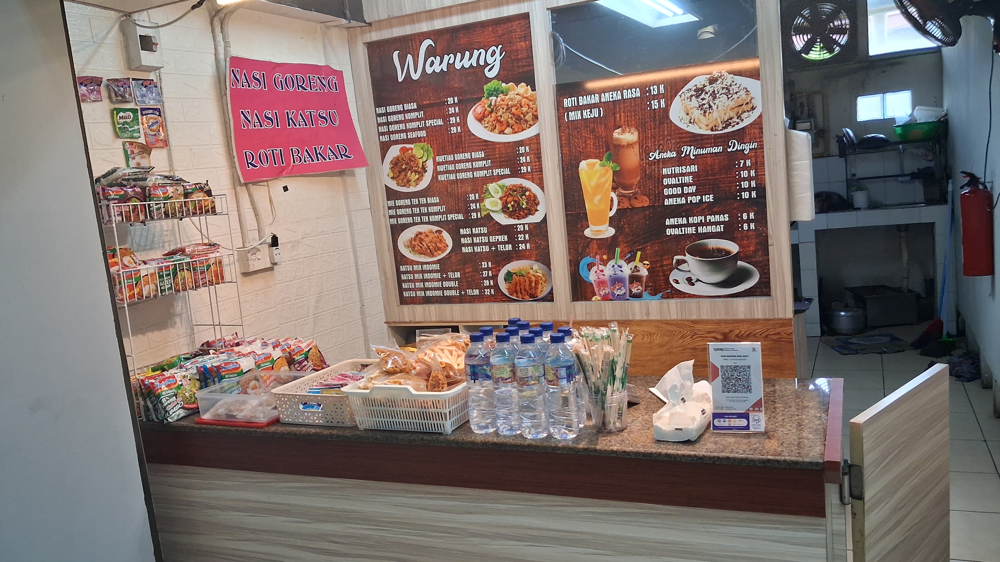

Profil Usaha

Warung Pojok Mba Sofy adalah usaha kuliner rumahan yang melayani menu masakan sehari-hari dengan cita rasa rumahan. Berdiri sebagai warung pojok yang ramai dikunjungi pelanggan sekitar, kami menyediakan aneka nasi goreng, mie/kwetiau goreng, katsu, roti bakar, hingga minuman dingin dan hangat.
Keunggulan
- Menu bervariasi, mulai dari Rp 6.000
- Porsi "komplit" dan "special" untuk yang lebih lapar
- Semua dimasak fresh setelah pesan
- Tempat bersih dan nyaman untuk makan di tempat